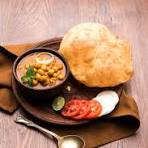

Chole Bhature

Description:
Ingredients
- 2 cups dries chickpeas,soaked overnight.
- 2 tea bags
- 1/2 teaspoon baking soda.
- 2 onions, finely chopped.
- 3 tomatoes,pureed.
- 2 green chillies,slit.
- 1 teaspoon cumin seeds.
- first rinse 1 cup white chickpeas a couple of times in water. Then soak them in enough water overnight or for 7 to 8 hours.
- Next day they will double in size.
- Then drain the water.
- In a 3 litre pressure cooker add the chickpeas. Also add 3 cups water and ¼ teaspoon salt. I have used a pressure cooker but you can also use a pot or pan.
The chickpeas will take a lesser time to cook in the pressure cooker than cooking them in a pot.
You can also add a pinch or two of baking soda while cooking them. Addition of baking soda is optional.
- Pressure cook chickpeas for 10 to 12 whistles or for about 15 to 20 minutes or till they are tender and cooked well.
Once the pressure settles down on its own then open the lid of pressure cooker and check if the chickpeas are cooked well or not. It is important to cook them till they are soft and have a melt in the mouth texture.
If cooking them in a pan then it can take about an hour or more. Just ensure they are well cooked. Timing to cook chickpeas will depend upon their quality and age.
- Once done then drain all the water and keep the cooked chickpeas aside.